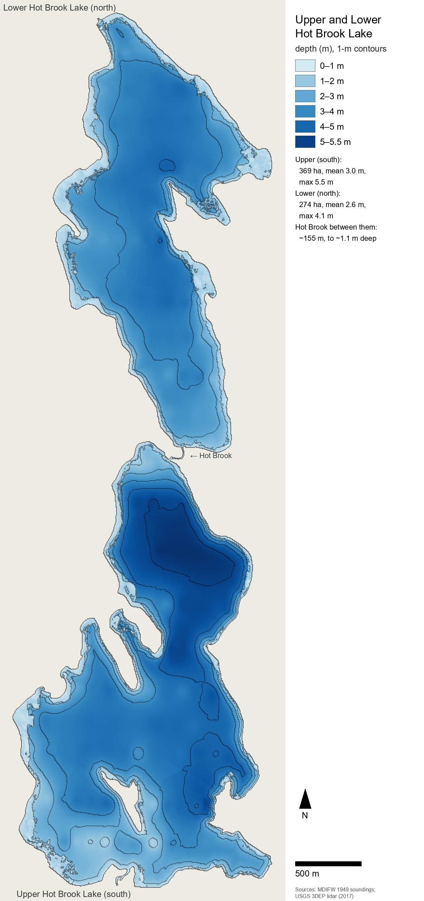

Part 1: Introduction and study system
On this page
- 1. Introduction
- 2. The study system — the Hot Brook lakes and their catchment
- 2.1 Location, drainage, catchment and climate
- 2.2 Morphometry
- 2.3 Hydrology: inflow, the connecting brook, outlet and flushing
- 2.4 Water quality: one reading in 1949, analogs since
- 2.5 Fish: records, regulation, stocking and the drainage
- 2.6 Sea-run alewife and American eel
- 2.7 Angling
- 2.8 Plankton, plants and invertebrates
- 2.9 Wildlife
- 2.10 Shoreline development and people
- 2.11 Angler observations (project field notes)
The Hot Brook lakes of eastern Maine — part 1 of 5
← Title, abstract and contents · Contents · Synthesis I: physics, nutrients, plankton and plants →
1. Introduction
Maine has thousands of small lakes and ponds, and most of them have little or no scientific record. A typical one in the eastern forest is a few hundred hectares of shallow, softwater, lightly to moderately colored water, ringed by spruce–fir and northern hardwoods and a scatter of camps. It holds a warmwater fish community that is partly native and partly introduced, and it carries perhaps one fisheries survey from the mid-twentieth century. Upper and Lower Hot Brook Lake, in the Penobscot headwaters on the Washington–Aroostook county line, are such a pair. Since a single survey in August 1949 no measurement of their water has been found: no phosphorus, no chlorophyll, no plankton, no estimate of any fish population (§2).
This paper arose from an attempt to simulate the two lakes and the brook between them as a whole ecosystem. The simulation follows the
water's temperature, ice, mixing, oxygen and nutrients, its algae, zooplankton, plants and bed animals, and its fish — individuals or schools, each steered
by habitat drives that its own neural network bends, and governed by published bioenergetics, with the year's young as brainless schools; around them it adds the birds, mammals, turtles and frogs, the anglers,
the camps and the weather. A model of that scope needs a value for every rate it uses, and each value has to come from somewhere. For
the Hot Brook lakes almost nothing comes from the lakes themselves. The work therefore became, first, a literature synthesis: 105
research notes (about 740,000 words, in docs/research_notes/) on the physical limnology, chemistry, plankton, plants, fish, wildlife and forest of Maine and comparable northern
lakes, every number tagged by how it was obtained (read in a primary source, taken from an abstract, cited second-hand, relayed by a search
summary, or inferred).
Building and testing the model then became a second kind of inquiry. Each time the simulated lakes failed to behave like real ones, the
failure had to be traced to a missing process, a mis-read parameter or an artifact of representation, and many of those traces taught
something general about small-lake ecology or about modeling it.
The paper reports both. Section 2 sets out what is actually recorded for the Hot Brook lakes and their catchment, keeping measurements apart from estimates. Section 3 synthesizes what is known of Maine lake ecosystems, from the physics of small shallow lakes through nutrients, plankton, aquatic plants and the fish to the wildlife and forest around them, with the field values a reader would need to build or test a model of such a lake. Section 4 describes the simulation. Section 5 reports what building and testing it taught: the errors found and their causes, the mechanisms that turned out to matter, and where the model still fails. Section 6 draws the threads together and lists the field measurements that would most reduce the uncertainty, for these lakes and for small Maine lakes generally.
Three conventions run throughout. Where the evidence for a value is weaker than a primary reading — an abstract, a second-hand citation, the project's own arithmetic — the text says so. Values measured at Hot Brook are distinguished from values for comparable lakes and from values elsewhere. And observations by an angler who fishes the lakes, which on several points are the only information there is, are labeled as angler observations (project field notes).
2. The study system — the Hot Brook lakes and their catchment
Upper and Lower Hot Brook Lake are two shallow, unstratified lakes (soft-water, to judge by their measured neighbors) in the forested headwaters of the Penobscot basin in eastern Maine, joined by a short rocky stretch of Hot Brook. They are typical of the region's warmwater lakes, and they are poorly measured: one fisheries survey of August 1949, a handful of agency species lists and specimen records, and remote-sensing products are nearly all that is on record. This section sets out that record and keeps it apart from three other kinds of evidence: values estimated from nearby analog lakes, the project's own calculations, and the observations of an angler who fishes the lakes. Section 3 gives the regional synthesis behind the analog values.
2.1 Location, drainage, catchment and climate
Upper Hot Brook Lake (Maine MIDAS 1076; centroid about 45.62° N, 67.94° W) and Lower Hot Brook Lake (MIDAS 1072; about 45.65° N, 67.94° W) lie in the town of Danforth and the unorganized township T8 R4 NBPP, Washington County, at the Aroostook County line. The survey sheets also name Bancroft (Aroostook County), and the fishing law lists the waters under Bancroft, Danforth, T8 R3 NBPP and T8 R4 NBPP (MDIFW 1949; MDIFW 2026). They fall on the USGS Jimmey Mountain and Stetson Mountain quadrangles, in MDIFW fisheries Region F (Penobscot), the South fishing zone and Wildlife Management District 11. The Maine DEP lake layer gives water-surface elevations of 424 ft (129.2 m) for Upper and 422 ft (128.6 m) for Lower; the 2017 lidar's hydro-flattened surfaces stand at 128.93 m and 128.23 m (USGS 2019).
The lakes drain to the Penobscot. Hot Brook enters Upper's south shore, leaves Upper at its north end, runs roughly 150–200 m to Lower's south end, leaves Lower at its north end, and flows about 3 km north to Baskahegan Stream. Baskahegan Stream joins the Mattawamkeag River about 7.4 km farther on, and the Mattawamkeag meets the Penobscot about 54 km below that. The lakes form HUC-12 010200030403 ("Lower Hot Brook Lake") within the Baskahegan Stream HUC-10 (0102000304) of the Mattawamkeag HUC-8 (01020003). Summed NHDPlus flowlines put the end of the network, in the Penobscot estuary, about 203.5 km from the head of Lower, or about 200 km from its outlet (project calculation); the Atlantic Salmon Federation places Danforth, about 7 km upstream of Hot Brook's mouth, about 130 mi (≈ 209 km) above tidewater (ASF 2021). The lakes sit near a major divide: East Grand Lake, also in Danforth, drains to the St. Croix, as do 14 of the 22 lakes listed for the surrounding towns (MDIFW 2007; project tally).
No published watershed area has been found: the DEP watershed layer holds no polygon for either lake, the Lakes of Maine pages that usually list one could not be reached, and two earlier project notes recorded the area as unknown. Summing NHDPlus catchments along the USGS NLDI network gives 65.8 km² (25.4 mi²) at Upper's outlet and 77.2 km² (29.8 mi²) at Lower's, catchment-to-lake ratios of about 18:1 and 28:1. Hot Brook drains about 36.2 km² where it enters Upper, roughly 55 % of Upper's catchment, and Lower's own local catchment is about 11.4 km² (all project calculations). By EPA StreamCat (NLCD 2019), Upper's catchment is 73.0 % forest (deciduous 30.0 %, mixed 32.3 %, evergreen 10.7 %), 14.4 % woody and 0.7 % herbaceous wetland, 5.7 % open water and 2.8 % developed (mostly developed open space, 2.4 %), with 0.17 % hay, no cropland and a mean elevation of 165 m. Lower's catchment is similar: 70.4 % forest, 14.4 % woody wetland, 8.5 % open water and 2.5 % developed.
The survey sheets describe both lakes as surrounded by "spruce fir forest" (Upper "mostly"), with wetlands to the south and west of Upper and the north and east of Lower (MDIFW 1949); the satellite classes are mostly deciduous and mixed instead. Among the 105 USDA Forest Inventory and Analysis plots within 40 km, the median stand is 55 years old, and maple–beech–birch types hold 48 % of the plots, spruce–fir 34 % and aspen–birch 11 % (project analysis of FIA data). Much of the surrounding land is managed timberland, and the Stetson I and II wind farms (about 2009–2010) stand on ridges off Route 169 between Danforth and Springfield. No bedrock or surficial geology for the catchment was examined for this paper, and the groundwater share of inflow is unknown. The shores are described as rocky with some sand and mud (MDIFW 1949), and Maine DEP reports depleted calcium in "Down East" watersheds (Maine DEP 2024).
The Danforth cooperative station (USC00171833), a few kilometers east of the lakes, has 1991–2020 normals of 4.9 °C for the annual mean, −10.3 °C for January and 18.8 °C for July, with about 198 days a year whose minimum falls below freezing. Precipitation averages 1,157 mm (45.56 in), spread evenly at 84–118 mm a month, and snowfall 243 cm (95.7 in) (NOAA NCEI 2021). Houlton International Airport, about 55 km north-north-east of the lakes (project calculation from coordinates), is slightly drier (4.8 °C; 998 mm); its hourly wind normals average 3.2 m/s, from 3.7 m/s in March to 2.6 m/s in August. For the Hot Brook catchment itself, StreamCat gives 1,203–1,205 mm of precipitation, 5.4 °C and 646 mm/yr of runoff.
No ice dates have been recorded at Hot Brook. On East Grand Lake in Danforth, ice-out averaged 23 April over 2015–2026 (range 12 April to 2 May, n = 11) and 17–18 April over 2021–2026 (Maine BPL ice-out records; project means); on West Grand Lake it averaged 24 April over 1979–2008 (Hodgkins 2010). No ice-on record for a nearby lake was found.
2.2 Morphometry
The two lakes are broad, flat-bottomed basins. Their mapped areas differ by up to about 2.5 % (Upper) and 5 % (Lower) among modern sources. MDIFW's 1949 planimetry for Lower (713 ac) is 4–5 % larger than the DEP, NWI and lidar outlines (NHDPlus, at 708 ac, comes within 1 %) and is still the figure printed in the state fishing guides. Table 1 gives each value with its source; values from different sources are not combined.
Table 1. Area and depth of the Hot Brook lakes by source. Values in parentheses are conversions or project calculations.
| Source (method, date) | Upper area | Upper mean depth | Upper max depth | Lower area | Lower mean depth | Lower max depth |
|---|---|---|---|---|---|---|
| MDIFW survey sheets (planimetry and soundings, Aug 1949; rev. 1965, 2004) | 912 ac (369 ha) | — (3.25 m)ᵃ | 18 ft (5.5 m) | 713 ac (289 ha) | — (2.71 m)ᵃ | 13 ft (4.0 m) |
| Lakes of Maine (DEP/LSM summary; via search summaries) | 890 ac (360 ha) | 11 ft (3.35 m) | 18 ft | 684 ac (277 ha) | 9 ft (2.74 m) | 13 ft |
| Maine DEP MIDAS polygons | 890.3 ac (3.60 km²) | — | — | 683.9 ac (2.77 km²) | — | — |
| MDIFW depth chart, Lower (2024; "Maine IFW – Historic") | — | — | — | 684 ac (277 ha) | 8 ft (2.44 m) | 13 ft (3.96 m) |
| NHDPlus V2 | 3.634 km² (898 ac) | — | — | 2.865 km² (708 ac) | — | — |
| USFWS National Wetlands Inventory (L1UBH) | 898.3 ac | — | — | 681.7 ac | — | — |
| USGS 3DEP lidar (2017; hydro-flattened water, 15-m grid) | 369 ha | — | — | 274 ha | — | — |
| The model's grid (1949 soundings fitted to the lidar shoreline; 0.25-m waterline) | 369 ha | 3.0 m | 5.5 m | 274 ha | 2.6 m | 4.1 m |
ᵃ Unweighted mean of the 83 (Upper) and 63 (Lower) transect soundings on the 1949 maps (project tally); not an area-weighted mean.
Upper, about 3.4 km north–south by 1.9 km across, has its deepest water, 5.5 m (18 ft), in a north basin beside the outlet. A narrows of 4–5 m (13–16 ft) leads south to a broad basin of 3.4–4.3 m (11–14 ft), edged along the south shore by a shelf 0.6–3 m (2–10 ft) deep. Lower, about 3.3 by 1.7 km, is a saucer: most soundings read 2.7–3.7 m (9–12 ft), the deepest, 4.0 m (13 ft), lies south of center, a long central trough sits inside the 10-ft contour, and the large eastern bay is 1.2–3.4 m (4–11 ft) deep (MDIFW 1949; MDIFW 2024). The 1949 map draws two islands in Upper; modern outlines show one, of about 4.2 ha.
Shoreline length is about 14.6 km for Upper (13.3 km of mainland plus the island) and 10.8 km for Lower (project GIS; Lakes of Maine gives 9 mi and 6.7 mi), for shoreline development factors of about 2.2 and 1.8. The Lakes of Maine mean depths are 0.61 (Upper) and 0.69 (Lower) of the maximum depths, against a median of 0.35 in 29 Maine lakes of a 1980 USGS study (project tally of Cowing & Scott 1980): the basins are unusually flat. Volumes come to about 12.1 × 10⁶ m³ and 7.6 × 10⁶ m³ from the Lakes of Maine mean depths, or 11.1 and 7.4 × 10⁶ m³ in a second project calculation. Both sheets state that the lake "is shallow and does not stratify during summer months" (MDIFW 1949).
The bathymetry rests on the 1949 transects, which barely reach the shallows: only four of each lake's 63–83 soundings lie within 50 m of shore, and the median sounding is about 150 m out. The model's bed (Figure 1) fits those soundings to the 2017 lidar shoreline and, for water ≤ 1 m deep, uses depths estimated from NAIP aerial photographs, with the edge of the shelf set at 1.3 m from one angler observation (the shallows stay "a foot or two deep" out to about chest depth before the water darkens). Tested leave-one-out against the 21 soundings ≤ 3 m, the photo depths had no skill at 1–3 m (r = −0.01, RMS error 0.84 m, against r = 0.55 and 0.71 m for interpolation between soundings), so the photographs inform only the 0–1.3 m fringe (project analysis). On this bed 12 % of Upper and 16 % of Lower lie at ≤ 1 m, and 44 % and 55 % at ≤ 3 m.

Figure 1. Depth of Upper Hot Brook Lake (south) and Lower Hot Brook Lake (north) on the model's grid (5-m cells; shading by depth, 1-m contours). The bed is the August 1949 MDIFW soundings fitted to the 2017 USGS 3DEP lidar shoreline, with photo-derived depths in the fringe ≤ 1 m. Upper: 369 ha, mean 3.0 m, maximum 5.5 m (north basin, by the outlet). Lower: 274 ha, mean 2.6 m, maximum 4.1 m. Hot Brook joins them over about 154 m, with pools to about 1.1 m. The nearshore shelf is poorly constrained: the median 1949 sounding lies about 150 m from shore.
2.3 Hydrology: inflow, the connecting brook, outlet and flushing
Hot Brook is the main inflow; Upper also receives "several small tributaries", none with "any suitable habitat for coldwater fish" (MDIFW 1949), and a Maine Forest Service map labels an East and a West Branch Hot Brook (search summary only). From the catchment area and StreamCat runoff, mean inflow at Upper's inlet is about 0.74 m³/s (project calculation). Route 169 crosses Hot Brook about 2.5 km above the lake on a metal pipe-arch culvert 17 ft wide, 10 ft high and 86 ft long (5.2 × 3.0 × 26 m), rated a "Potential Barrier" in a 2009 survey (Maine Stream Habitat Viewer); MaineDOT lists a 17.6-ft bridge of 1979 at the same point, probably the same structure. Along Upper's south and east shores the road passes over 29 cross-culverts of 12–48 in and one of 60 in (MaineDOT).
MDIFW describes the connecting brook as "a short (1/8 mile) non-navigable connecting stream", "rocky and hard bottomed" and without coldwater habitat; a boater "must be prepared to paddle, pole, or walk a boat" through it, so Lower has no motorboat access (MDIFW 1949). Its length is about 142 m on NHDPlus, about 200 m by MDIFW's eighth of a mile, and 154 m on the lidar used for the model. The 2017 lidar water surfaces fall 0.70 m from Upper to Lower, a gradient of about 0.45 %; DEP's rounded elevations give 2 ft (0.6 m). The National Wetlands Inventory maps the stream as 0.4 ac (about 1,600 m²) of lower perennial riverine habitat; a project estimate of about 8 m width gives roughly 1,200 m². No road crosses it. No width, depth, substrate, discharge, temperature or fish survey of the brook has been found; its flow is Upper's outflow, a mean of about 1.3 m³/s (project calculation).
The angler's observations (project field notes) supply the stream's form: pools 3–4 ft (about 0.9–1.2 m) deep, the deepest where the brook leaves Upper; cobble riffles, one of them running straight into a lake; and slow runs over orange-brown sand with sunken wood. On 24 August 2025, in a dry summer, the brook was nearly dry, reduced to one thin channel, with riffles that could be walked across and bars grown with sensitive fern and grasses.
Lower drains from its north end by Hot Brook, which runs about 2.95 km (NHDPlus) to Baskahegan Stream and joins it about 7.1 km of flowline below the 1845 dam at Danforth (National Inventory of Dams ME00178; 16 ft, 4.9 m high) that impounds Crooked Brook Flowage. Neither the state dam layer nor the NID holds a dam on either lake. A railroad crosses Hot Brook about 2.2 km below Lower, its passability rated unknown (Maine Stream Habitat Viewer, 2009). In 1949 a legislative document proposed $750 for "a fish screen at outlet of Lower Hot Brook", to be maintained by the Danforth Rod and Gun Club; whether it was enacted or built is unknown (Maine Legislature 1949). Any present control of lake level is probably beaver-made (inference): the NWI codes several wetlands within 500 m of both lakes as beaver-modified, though only from aerial photographs.
No published flushing rate, lake-level record or outlet-sill elevation has been found (the Lakes of Maine pages, which usually give a flushing rate, could not be reached). The project's water balance, from catchment runoff and the lake volumes, puts Upper's mean outflow at about 1.28–1.35 m³/s, a flushing rate of 3.5–3.7 a year and a residence time near 100 days, and Lower's at about 1.55–1.58 m³/s, 6.6 a year and about 55 days; about 83–85 % of Lower's inflow arrives through the brook from Upper (two project calculations).
The seasonal pattern can be read from the Mattawamkeag River near Mattawamkeag (USGS 01030500; 1,418 mi², 3,670 km²), which integrates the Hot Brook catchment. Over 1934–2001 its April mean flow was 3.4 times the annual mean and its August mean 0.29 times (Dudley 2004a), and the flow exceeded 90 % of the time is 0.105 times the mean (Nielsen, Lippert & Caldwell 1997). The years 2025 and 2026 were exceptionally dry: the river set record low flows in 2025, and on 7 October 2026 recorded its second-lowest flow since 1934, with a 2026 minimum of 23 cfs, about 0.009 times the long-term mean (NWS Caribou 2026; USGS NWIS provisional data).
2.4 Water quality: one reading in 1949, analogs since
No water-quality measurement of either lake since the August 1949 survey has been found. Neither appears in DEP's annual-means compilation of 1,072 lakes for 1940–2018 (Bacon & Vaux 2019), in the DEP/Volunteer Lake Monitoring Program data tables of 2025 (Maine DEP & VLMP 2025), in DEP's lake sampling-station layer or in the Water Quality Portal; the 2025 combined LSM–DEP dataset could not be checked, and the Lakes of Maine pages were blocked to scripted access. The 1949 sheets print a surface temperature of 74 °F (23.3 °C) for both lakes, and both carry a second line, "75 feet – 71 °F" (21.7 °C). That depth is impossible in lakes of 18 and 13 ft, and the identical line on both sheets is probably a garbled near-bottom reading or a template error (project reading of MDIFW 1949). No Secchi depth, color, total phosphorus (TP), chlorophyll a, pH, alkalinity, conductivity, dissolved organic carbon, calcium or oxygen profile, summer or under ice, has been found for either lake.
In DEP's 2024 Integrated Report both lakes are in EPA Category 2 (assessment units 0102000304_1076L and 0102000304_1072L), which the notes read as attainment presumed without data. Neither is on DEP's algal-bloom risk list; both are recorded as not infested by invasive plants, with invasion-risk scores of 26 (Upper) and 24 (Lower) on an 11–87 scale (Maine DEP 2024). No fish from either lake has been analyzed for mercury; the statewide freshwater fish-consumption advisory applies.
The nearest measured lakes are listed in Table 2. Baskahegan Lake, in the same drainage about 13 km away and 6.7 m deep, is the closest analog; it was fully mixed on 23 August 2004 (20.7 °C, 8.7 mg/L O₂ from the surface to 5 m), and shallow Faulkner Lake held 7.9–8.6 mg/L at the bottom in late summer 2004 and 2006 (Maine DEP & VLMP 2025). Calcium was 2.1–4.0 mg/L in National Lakes Assessment samples from Skitacook and Pleasant lakes.
Table 2. Water quality in the nearest measured lakes (annual or single-visit means; none at Hot Brook).
| Lake (MIDAS), relation to Hot Brook, max depth | Years | Secchi (m) | Color (SPU/PCU) | TP (µg/L) | Chl a (µg/L) | pH | Alkalinity (mg/L CaCO₃) | Source |
|---|---|---|---|---|---|---|---|---|
| Baskahegan Lake (1078), same drainage, ~13 km; 6.7 m | 2001–2011 | 3.7–4.7 | 46 (2004) | 9–10 | 3.1–3.3 | 6.6 | 5.5 | Bacon & Vaux 2019; Maine DEP & VLMP 2025 |
| Faulkner Lake (1064), Weston; 3.7 m | 2003–2006 | 3.5–4.5 | 18 | 9–12 | 3.6–5.5 | 6.8–7.0 | 8.4 | Maine DEP & VLMP 2025 |
| North Lake (1063), Orient | 1992–2014 | 3.3–4.6 | — | — | — | — | — | Maine DEP & VLMP 2025 |
| Skitacook Lake (1730), ~47 km NNW; 5.2 m | 2012, 2017 (NLA) | 3.4–4.2 | 22–25 | 7.6–9 | 2.1–2.5 | 7.1–7.4 (2017) | — | USEPA NLA via WQP |
| Webster Pond (4678), ~27 km SW | 2012 (NLA) | 2.76 | 27 | 13 | 3.6–3.9 | — | — | USEPA NLA via WQP |
From these analogs the project expects Secchi of about 3.5–4.5 m, color about 20–50 SPU, TP about 8–12 µg/L, chlorophyll a 2.5–4 µg/L, pH 6.6–7.2, alkalinity 5–12 mg/L and conductivity 22–30 µS/cm at Hot Brook (project inference). The "TP 9–10 µg/L, alkalinity ~5 mg/L" in the project's fish census are estimates of this kind, not measurements. On Baskahegan's 2004 values the Carlson trophic-state index is 37–42, the oligotrophic–mesotrophic boundary (project calculation), and an export-coefficient budget for the catchment predicts in-lake TP of about 8 µg/L in Upper and 6 µg/L in Lower before any internal loading (project estimate). Earlier project notes inferred a browner, richer lake (color 30–60 SPU, TP 10–20 µg/L, chlorophyll 3–8 µg/L) from general Maine colored-lake patterns; they predate the DEP analog data and are superseded. The angler judges the water "a bit clearer" than the model's (project field notes). No under-ice oxygen profile has been found for any nearby lake; the notes read the persistence of a principal white perch fishery with no recorded winterkill as indirect evidence that winter oxygen stays adequate (inference).
2.5 Fish: records, regulation, stocking and the drainage
Three MDIFW records list the lakes' fish (Table 3). The 1949 survey sheets (revised 1965 and 2004; Federal Aid project F-28-P) name smallmouth bass, white perch, yellow perch, chain pickerel, bullhead ("horn pout") and banded killifish, and, under the heading "Minnows", blacknose dace, fallfish and white sucker; the principal fisheries are smallmouth, white perch and chain pickerel, and each lake is called "a typical warm water lake" with "excellent spawning and adult habitat for bass, perch, and pickerel" (MDIFW 1949). The Lake Fish of Maine database, compiled from MDIFW lake surveys, older surveys and informal records, lists ten species for Upper (the 1949 nine plus pumpkinseed) and nine for Lower, with no extirpations (MDIFW 2007). MDIFW's 2024 depth chart for Lower names chain pickerel, smallmouth and white perch as principal species and banded killifish, blacknose dace, brown bullhead, fallfish, pumpkinseed, sea-run alewife, white sucker and yellow perch as others (MDIFW 2024). It is the first record of alewife in the lakes, and it fills pumpkinseed's gap in Lower's 2007 list.
None of these records gives gear, effort, abundance or the year each species was recorded, so an absence from them is weak evidence for small fish, eels and seasonal migrants, and the sheets do not say which species the 1965 and 2004 revisions added. No electrofishing, population-estimate netting, creel survey or age-and-growth sample has been found for either lake, and the EPA's 1991–94 Northeast lake survey (EMAP) did not visit them.
Table 3. Fish recorded at the Hot Brook lakes, by source. "Angler" = angler observations (project field notes; §2.11).
| Species | MDIFW sheets 1949 (both lakes) | Lake Fish of Maine 2007: Upper / Lower | MDIFW chart 2024 (Lower) | Angler |
|---|---|---|---|---|
| Smallmouth bass (Micropterus dolomieu) | principal | yes / yes | principal | most logged catches |
| White perch (Morone americana) | principal | yes / yes | principal | "mostly white perch" |
| Chain pickerel (Esox niger) | principal | yes / yes | principal | a few |
| Yellow perch (Perca flavescens) | yes | yes / yes | yes | scarce, small |
| Brown bullhead (Ameiurus nebulosus) | yes ("horn pout") | yes / yes | yes | yes (Upper) |
| White sucker (Catostomus commersonii) | yes (under "Minnows") | yes / yes | yes | — |
| Fallfish (Semotilus corporalis) | yes (under "Minnows") | yes / yes | yes | "lots" |
| Blacknose dace (Rhinichthys atratulus) | yes (under "Minnows") | yes / yes | yes | not seen |
| Banded killifish (Fundulus diaphanus) | yes | yes / yes | yes | — |
| Pumpkinseed (Lepomis gibbosus) | — | yes / — | yes | yes (brook; Upper) |
| Redbreast sunfish (Lepomis auritus) | — | — / — | — | yes (photographs, brook) |
| Sea-run alewife (Alosa pseudoharengus) | — | — / — | yes | — |
| American eel (Anguilla rostrata) | — | — / — | — | never seen |
| Golden shiner (Notemigonus crysoleucas) | — | — / — | — | not seen |
The lakes are managed as bass and white perch waters under special rules. The 2019, 2023 and 2026 law books read: "General fishing laws apply, except: Daily bag limit on white perch: 25 fish. All bass must be released alive at once", with artificial lures only, and trout, salmon and togue released, from 1 October to 31 December (MDIFW 2026). On one reading of the 2026 law book the South Zone general law keeps the lakes open all year, so ice fishing is legal. The 25-fish white perch limit was set on seven eastern Maine lakes "as a result of a citizen petition and not for biological reasons" (Smith 2002); that the Hot Brook lakes are among the seven is an inference. The sheets as revised in 2004 call the lakes "managed for a larger than average size bass fishery" and "open to fishing until November 30" (MDIFW 1949), and a 1963 Resolve opened them in October to all fish but trout, salmon and togue (Maine Legislature 1963). The fishing guides list the primary fishery as smallmouth, white perch and pickerel, reached from a "Town landing off Rte 169" (MDIFW fishing guides 2016–2024).
Neither lake appears in any MDIFW stocking report for 2015–2025; Danforth's stockings went to East Grand Lake and Little Greenland Pond. Smallmouth bass are not native to Maine, where they were first introduced in 1868 (Jordan 2001); they were at Hot Brook by the 1949 survey or its revisions, but when and from where is unknown. The bill of March 1949 says the local club "wish[ed] to introduce game fish into Upper Hot Brook and Lower Hot Brook lake" (Maine Legislature 1949), and the state stopped stocking black bass in the 1970s (Vaux & Webster 2007). The state's non-native-fish layer marks both lakes as holding a confirmed non-native species without naming it. The Penobscot diadromous-fish plan classes smallmouth as introduced and white perch as "introduced throughout the drainage", and contradicts itself on chain pickerel ("native" in its Table 4, introduced in its text) (Maine DMR & MDIFW 2008). Yellow perch, brown bullhead, white sucker, fallfish, blacknose dace and banded killifish are probably native (project inference), though sources disagree on whether banded killifish is native to Maine.
The drainage shows what might be expected but is not recorded. Seventeen lakes in and around the Mattawamkeag drainage that hold smallmouth, white perch and chain pickerel average 13.9 species, and the seven of them ≤ 8 m deep average 10.7 (median 10), close to Hot Brook's 10 and 9 (MDIFW 2007; project tally). Species frequent in these analogs but absent from the Hot Brook lists are American eel (14 of 17; 4 of the 7 shallow lakes), rainbow smelt (11), brook trout (10), landlocked salmon (9), golden shiner (9; 3 shallow), common shiner (7; 5 shallow) and creek chub (7). No lake of the wider 61-lake set records largemouth bass, black crappie, northern pike or slimy sculpin. Coldwater fish are unlikely, since the lakes have no cold water and the sheets find no coldwater habitat in any tributary; an unsourced online claim of brook trout and salmon has no survey or stocking support. Three "largemouth" in the angler's catch-app log for Upper were judged by the angler "probably mislabeled smallmouth". Golden shiner, frequent in the region, has no record at Hot Brook and appears in this paper only as a regional species (§3.5).
2.6 Sea-run alewife and American eel
The 2008 Penobscot restoration plan listed both lakes as alewife habitat: at its standard production of 235 adults per acre it projected 214,320 adults for Upper (912 ac) and 167,555 for Lower (713 ac), with restoration stocking at 6 adults per acre (Maine DMR & MDIFW 2008). No alewife stocking of either lake has been found, and the state's alewife-habitat layer, of unstated date, still classes both as "Inaccessible – not stocked". The runs have since grown: river herring passed at Milford rose from 589,503 in 2015 to a provisional 5,476,107 in 2024 (Maine DMR counts). Maine DMR confirmed alewives at Danforth in 2017, arrived without stocking, "the farthest inland known to recolonize naturally on the East Coast" (ASF 2024). They gathered below the Danforth dam in the years before a pool-and-weir fishway was built there in 2023 and dedicated in August 2024 (AGC Maine 2024; ASF 2024). Hot Brook's mouth lies about 7 km below that dam, so alewives ascending Baskahegan Stream pass it first, and MDIFW's 2024 chart lists sea-run alewife for Lower (MDIFW 2024). No count, date or spawning record for alewives at Hot Brook has been found, and the Danforth fishway's counts are not public. The possible obstacles on Hot Brook itself are the railroad crossing below Lower (passability unknown), any beaver dams and the unknown state of Lower's outlet.
The American eel is listed in 34 % of Maine lakes (761 of 2,207), in 27 of the 61 lakes of the study set in and around the Mattawamkeag drainage, and in the Baskahegan system for Baskahegan Lake and Crooked Brook Flowage, both above the Danforth dam (MDIFW 2007; project tally). It is not listed for either Hot Brook lake, and the angler has never seen one. Both dams on the route from the sea, Milford and West Enfield, provide eel passage. Daytime net-and-seine surveys probably catch few eels (inference), and no eel survey, count or eDNA sample has been found for Hot Brook, Baskahegan Stream or the Mattawamkeag, so their presence is unresolved.
2.7 Angling
No creel survey, angler diary, tournament record or effort count has been found for either lake, and MDIFW's September 2026 regional fishing reports do not mention them. The nearest measured rates are regional: in 1998–99 Region F bass waters received about 1.8 angler-days per acre per year (4.4/ha), 22 % of them in winter, against 4.6 statewide, and in Washington and Hancock counties bass are almost never caught through the ice (Jordan 2001); Region F white perch waters received about 1.3 angler-days per acre (3.2/ha), 20 % on ice (Smith 2002; project arithmetic). Scaled from these, the project estimates about 12 angler-hours per hectare per year on Upper (range 5–25; about 4,400 hours) and 4 on Lower (range 1–10) (project estimate). Upper (912 ac by MDIFW's area) exceeds the 500-acre minimum for weigh-in bass tournaments (MDIFW 2019), but none has been recorded.
2.8 Plankton, plants and invertebrates
No plankton or algal sample from either lake has been published, and no phytoplankton species record has been found for any lake in Washington or Aroostook County; the nearest quantitative zooplankton data come from 37 Canadian lakes within 250 km, ten of them within 150 km (§3.3). The only in-lake plant specimens are two stoneworts, Nitella flexilis (aff.) and N. tenuissima (aff.), collected fertile on 15 July 2015 about 10 m from Upper's south-east shore during a single visit with a 30-minute search target (Sleith et al. 2018). The visit was part of a survey of 740 New York and New England waters whose specimen records show Nitella at almost every eastern Maine lake visited that July; Wytopitlock Lake, 23 km away, yielded the same pair. Nothing has been collected from Lower, the brook or Hot Brook below Lower; Lakes of Maine's page for Lower has a plants section (seen only in a search summary) that could not be read.
NAIP near-infrared imagery shows floating-leaved and emergent beds as a thin fringe, about 2.3 ha in Upper (0.6 % of its area) and 0.8 ha in Lower (0.3 %), at a median 15 m from shore: at Upper's south end by the inlet wetlands, in Upper's western coves, and along Lower's north, east and west shores; submerged beds cannot be measured this way (project analysis). The National Wetlands Inventory maps large forested and scrub-shrub wetlands at Upper's south end and west side, and a single emergent marsh touching either lake, 1.6 ac at Lower's north end. Maine DEP records no invasive aquatic plant in either lake; the nearest known infestation is variable water-milfoil in Big Lake, about 54 km south in the St. Croix drainage (since 2019), an unverified curly-leaf pondweed record lies about 40 km away, and narrow-leaved cattail was recorded on Baskahegan Stream at Danforth in 2011.
Invertebrate records are few and incidental:
- Freshwater jellyfish. The non-native Craspedacusta sowerbii was reported from Lower in 2005 (USGS NAS record 236149), and also from East Grand Lake, Grand Lake Flowage and Mattawamkeag Lake.
- Mussels. MDIFW's listed-species layer holds a yellow lampmussel (Lampsilis cariosa, state Threatened) element in Upper, date not public, and none in Lower; a research-grade 2025 photograph of the species is geo-obscured within the 0.2° cell containing the lakes. The Threatened brook floater (Alasmidonta varicosa) is recorded downstream in the Baskahegan Stream–Mattawamkeag system. Which species make up the "lots of mussels" the angler reports is unknown.
- Leeches. A 2023 photograph of the medicinal leech Macrobdella decora is obscured within the same cell.
- Crayfish. No species has been identified from the lakes (the angler photographed one young crayfish; §2.11); within 50 km iNaturalist holds Faxonius limosus, F. virilis and, in New Brunswick, Cambarus bartonii.
- Odonata. New Brunswick Museum vouchers record Ischnura verticalis, Enallagma minusculum, E. civile and Lestes vigilax at a south-shore site on Upper that the labels call a public launch, on 28 July 2005, and Hagenius brevistylus, Sympetrum costiferum, S. obtrusum, S. vicinum, Argia fumipennis and Aeshna canadensis at Lower on 22 August 1999.
2.9 Wildlife
MDIFW's records show a bald eagle nest on Upper Hot Brook Lake: a pair in 2008, one young fledged in 2013, and eagles at the nest in July 2018; activity since is unconfirmed. The Maine Bird Atlas (2018–22) confirmed breeding in the surrounding block, but atlas effort was thin (only one of the four blocks covering the lakes had substantial summer effort, and winter effort was near zero), so an unrecorded species means no data, not absence. No count of loon pairs or chicks has been published; the lakes lie north of the area covered by Maine Audubon's annual loon count, and the one dated record is of two loons on 27 May 2022, probably on Lower. No osprey nest is recorded. MDIFW maps inland waterfowl and wading-bird habitat around the lakes, including Upper's south end, Lower's north end and Hot Brook below Lower, and a significant vernal pool and two deer wintering areas nearby.
Mammal records are regional. Moose and fisher have been recorded about 2 km from Lower (iNaturalist, 2020 and 2021); Danforth's moose harvest fell from 9 a year in 2009–10 to 0–1 a year in 2019–25 as permits were cut, and its black bear harvest was 5–14 a year in 2019–2025. No beaver, otter, mink or muskrat has been recorded at the lakes, though the NWI's beaver-modified wetlands suggest beaver. Herptile records at the lakes are a northern two-lined salamander west of Upper (2017) and a garter snake at Lower (2023). Painted turtles have 21 iNaturalist records within 40 km, none from the lakes (§3.8.5), though one earlier search found none in the region. The angler's wildlife observations are in §2.11.
2.10 Shoreline development and people
The survey sheets as revised in 2004 note "an area of camp development along the south shore" of Upper and say of Lower, "There are no camps on this lake" (MDIFW 1949). A 2026 count from aerial imagery (NAIP 2009–2023, state orthophotos from 2003–05, building footprints, OpenStreetMap, E911 and parcel layers and the 2017 lidar) finds more:
- Upper: about 33 dwellings (camps, houses, cabins and trailer sites) and 8 outbuildings within about 200 m of the water, about half on the south shore and the rest on the east and north-east shores; the west and north-west shores are timberland without buildings.
- Lower: about 22 dwellings and one outbuilding, mostly on the south, east and north-east shores. One camp was visible in 2003–05 and two more by 2009, more appeared from about 2015, and a subdivision was laid out in 2021–24, so MDIFW's "no camps" was already not quite right in 2004.
- Use and docks: about six buildings may be lived in year-round (judged from lawns, vehicles and gardens). Docks number 17 at 15 dwellings on Upper and 3 at 3 dwellings on Lower, 6–16 m long (median about 9 m); spring 2020 imagery shows none, because docks are pulled for winter.
- Roads and shore: within 500 m of the water are about 1.1 km of paved road (Route 169), 11.8 km of gravel and 2.5 km of logging track. The "large sandy beach" on Upper's north-east shore runs about 220 m, and nine mown lawns reach the water.
These counts supersede earlier estimates of 15 camps on Upper and 15–31 buildings in OpenStreetMap. The angler reports that most camps with lake access have a small removable dock, so the imagery probably misses small docks under trees or pulled before a flight. The model follows that observation: it places a dock at every lived-in camp on or near the water, 54 docks at 58 lived-in camps (Upper 36, Lower 22; 6 year-round), so its dock count exceeds the 20 seen in imagery by design, and it has, for reasons not recorded, three more camps than the imagery count (36 against 33 dwellings) on Upper. A project estimate puts the effect of 20–40 camps at only 0.1–0.2 µg/L of algae-available phosphorus (0.2–0.4 µg/L as total P; §3.2). At the 2010 census, 7,317 people lived within 30 km of the lakes (Maine DEP Lake Vulnerability Analysis). MDIFW describes the public launch as an unimproved site at Upper's south end reached from Route 169; aerial imagery suggests a road end on the south shore, while the angler places it at a gravel landing elsewhere near the south end (project field notes), and whether Lower has a landing is unconfirmed.
2.11 Angler observations (project field notes)
These observations come from an angler who fishes both lakes and the brook in open water and through the ice, with photographs (May 2024 to July 2026) and a catch-app log. They are not survey data, but on several points they are the only information there is.
Fish. In the catch-app log smallmouth bass are about 70 % of logged catches (8 of 11 on Upper, 16 of 22 on Lower); elsewhere in the field notes the angler says the catch is "mostly white perch", fish "probably bigger than 6 to 8" in (15–20 cm). The two statements may refer to different seasons or methods and are not reconciled. Yellow perch are scarce at any size ("few perch even ice fishing or with small baits"), smaller and fewer than fallfish and bass; the project places the winter "perch holes" over the north basin's deepest water, 4.6–5.5 m (15–18 ft) (project inference). Fallfish are caught in "lots" and chain pickerel a few; the app log also records brown bullhead and pumpkinseed (Upper) and yellow perch and pickerel (Lower).
The brook. In summer, sunfish 18–21 cm long hold in the brook's 3–4-ft pools; by photograph most are redbreast sunfish (long all-black ear flaps, orange breasts) and some pumpkinseed, and redbreast's presence at Hot Brook rests on these photographs alone. Pickerel "swim through and hang out" in the brook; larger bass wait in the deep pool at Upper's outlet, apparently for schools of small fish, while smaller bass stay in the brook. Schools of small minnows pass between the lakes and gather in the shallows; whether they are young fallfish or dace is uncertain. The angler has never seen an American eel, a blacknose dace or a golden shiner.
Other animals and plants. The angler reports "lots of mussels" in the lakes and the brook; crayfish present but "not common" (one young crayfish photographed); snails; "definitely some bullfrogs", "frogs of several species" and "some turtles"; bald eagles, white-tailed deer and black bears at the lakes; and a female common merganser with large young on a boulder in a bulrush stand (July 2026). Photographs show bulrush (possibly rush) in shallow water; ribbon-leaved plants over sand in the slow brook and at its mouth, identified by eye as Potamogeton epihydrus, Sparganium or possibly Vallisneria; fine-leaved shoots in the brook (bladderwort or native milfoil); a dark tuft on a riffle stone, possibly Fontinalis or lodged drift; banks of sweet gale, speckled alder, northern white cedar and sensitive fern; and one wave-washed cobble shore with no rooted plants out to about 0.6 m depth.
← Title, abstract and contents · Contents · Synthesis I: physics, nutrients, plankton and plants →